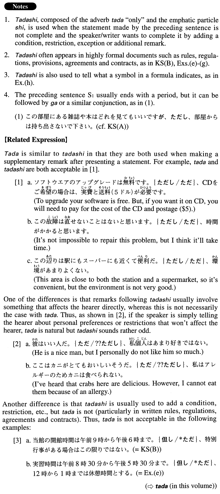

但し・ただし (A. 573)
- (ksa).
- この部屋にある雑誌や本はどれを見てもいいです。但し、部屋からは持ち出さないで下さい。
- You may look at any of the magazines or books in this room. However, please do not take them out of the room.
- (ksb).
- 当館の開館時間は午前9時から午後６時まで。但し、特別行事がある場合はこの限りではない。
- This hall is open from 9 a.m. to 6 pm. However, for special events, the hall is not limited to these hours.
- (a).
- 試験の時、辞書を見てもいいです。但し、和英辞典だけです。
- You may consult dictionaries' during the exam. However, (you may use) only Japanese-English dictionaries.
- (b).
- この製品は定価の3割引きで販売しています。但し、返品はできません。
- We sell this product at 30 percent off the list price. But we cannot accept returns.
- (c).
- 問題があったらいつでも相談して下さい。但し、お金の問題は相談に乗れません。
- Please (feel free to) talk to me whenever you have a problem. However, I cannot help you with money matters.
- (d).
- 発表のトピックは何でもかまいません。但し、発表時間は20分以内です。
- You can choose any topic for your presentation. However, the presentation should be 20 minutes or fewer.
- (e).
- 実習時間は午前8時30分から午後5時30分まで。但し、12時から1時までは休憩時間とする。
- The hours of the internship are from 8:30 a.m. to 5:30 p.m. However, there will be a break from 12:00 to 1:00.
- (f).
- 総会の議決は会員の過半数を以って決定される。但し、規定改定はこの限りではない。
- Decisions at the general meeting are passed by a majority of the members. However this does not apply to revisions of the regulations.
- (g).
- 第７条(出張の経路等)出張の経路とその利用交通機関は、経済性を重視して選ぶことを原則とする。但し、特別の理由がある場合はこの限りではない。
- Article 7 (Routes of business trips, etc.): As a rule, for business travel, choose routes and means of transportation with economy in mind (literally: placing the most importance on economy). However, there can be exceptions when there is a special reason.
- (h).
- V＝IR但し、VはAB間の電位差、Iは電流、Rは抵抗
- V=IR where V is the potential difference between Points A and B, I is the electric current, and R is the resistance.
